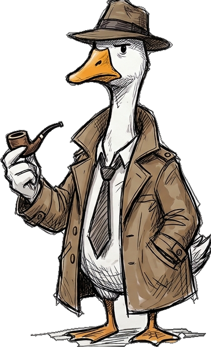
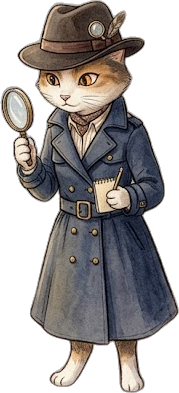

УБШ
УБ Шуурхай Мэдээ
2 цагийн өмнө · 🌐
😱 ӨНӨӨ ӨГЛӨӨ УБ!! Ийм утаан дунд хүүхдээ яаж өсгөх вэ?! Хуваалцаад бүгдэд мэдүүлээрэй 👇👇
👆 Зургаар хайх
😮😢 2.4K💬 318 сэтгэгдэл
👍 Таалагдсан💬 Сэтгэгдэл↗ Хуваалцах
v2-ын 04–05 дэлгэцийг орлоно. Тоглогч бэлэн ул мөр нээхийн оронд Facebook пост дээр өөрөө дарж, хайлт хийж, нотолгоо цуглуулна. Гацвал Галаа ахлахаас 3 түвшний тусламж авна.

Хуудасны нэр, зураг, сэтгэгдэл бүгд дарагдана (улаан тасархай хүрээ). Галаа эхний удаад хаашаа дарахыг заана.
Хуудасны нэр дээр дарахад Facebook-ийн “Хуудасны ил тод байдал” шиг мэдээлэл гарна. Чухал баримтаа 📌 хадгална.
Зураг дээр дарахад тоглоом доторх “зургаар хайх” нээгдэнэ. Хамгийн эртний огноог олох нь гол ур чадвар (Google Lens, TinEye-г дуурайна).
🔎 дарахад тоглоом доторх хайлт нээгдэнэ. Тоглогч өөрөө бичих эсвэл санал болгосон түлхүүр үг сонгоно. Аль эх сурвалж найдвартайг өөрөө шийднэ.
Сэтгэгдэл бол сэжүүр, нотолгоо биш. Ижил текст давтдаг бот хаягууд, зураг хуучин гэж бичсэн хүнийг олж, түүнийгээ хайлтаар батална.
Гацвал тоглогч өөрөө тусламж хүснэ. 3 түвшинтэй: эхнийх нь үнэгүй, сүүлчийнх нь оноо их хасна. Өдөрт 3 тасалбар.
Цуглуулсан нотолгоогоо харж, дүгнэлтээ сонгоно. Дүгнэлтээ батлах 1–2 гол нотолгоогоо тэмдэглэх ёстой. Энэ нь “яагаад” гэдгийг бодуулна.

Зөвхөн зөв/буруу биш, мөрдөн шалгасан арга нь үнэлэгдэнэ: гол нотолгоо олсон эсэх, хэдэн эх сурвалж шалгасан, тусламж авсан эсэх. Алгассан сэжүүрийг харуулна.